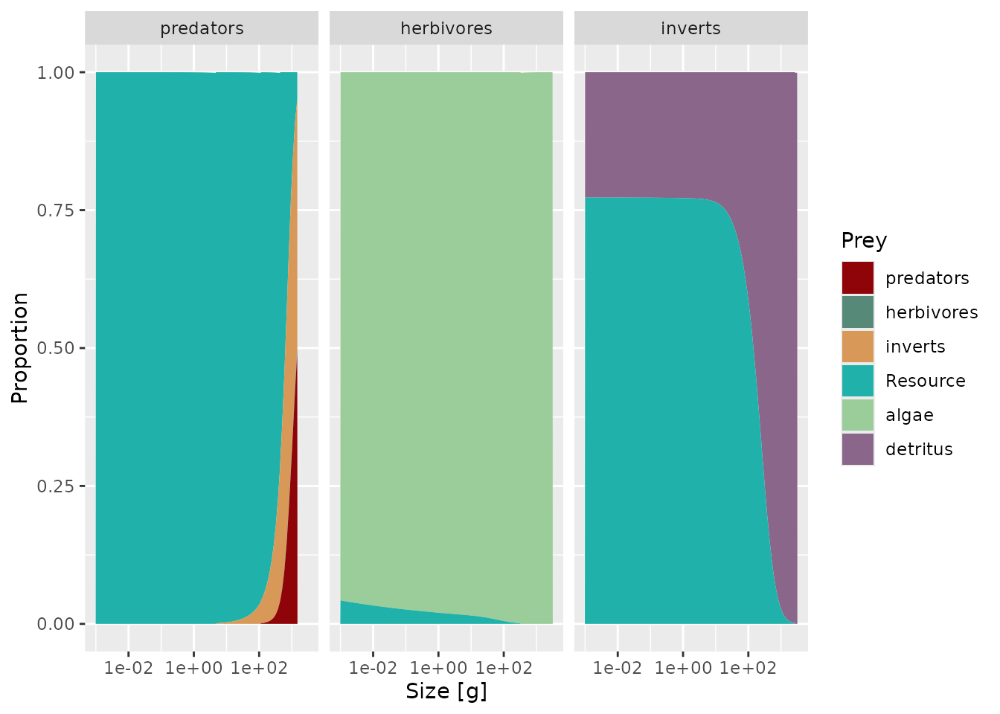
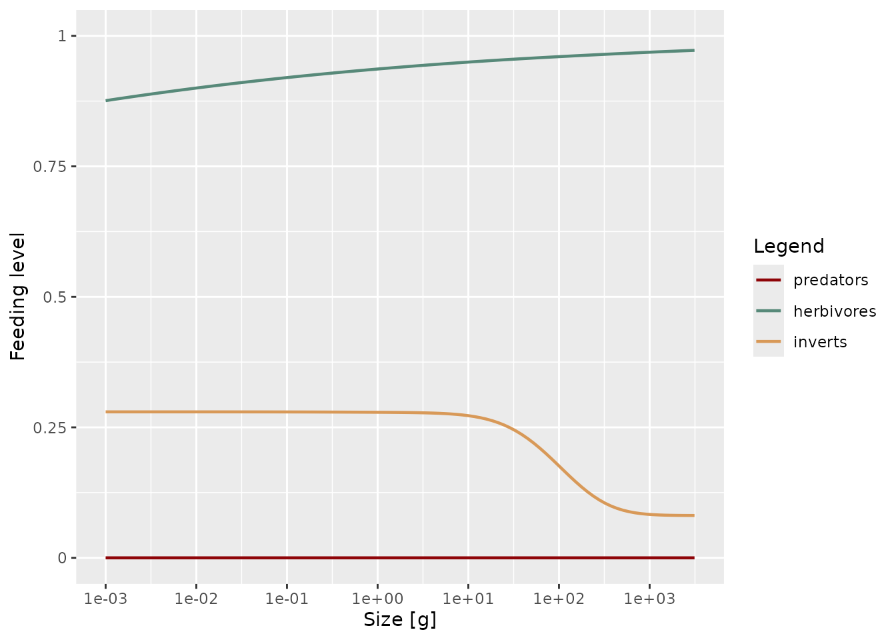
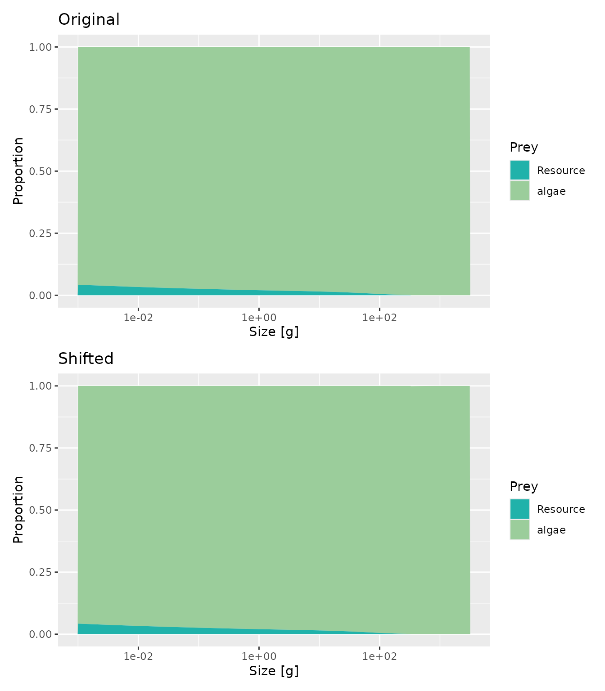

Overview
A mizerReef model’s diet composition – how much of each consumer’s
intake comes from other fish, from plankton, from algae, or from
detritus – is set by several parameters working together, and it
interacts with the biomass and growth calibration covered in
vignette("steady-state-recipe"). This vignette focuses on
that interaction specifically: where diet composition actually lives in
a mizerReef model, how it’s kept in balance as you change it, and how to
read plotDiet() to tell whether a diet is realistic.
It assumes you already have a model near steady state (see
vignette("mizerReef") and
vignette("steady-state-recipe")); the worked example below
uses the bundled caribbean_3_model.
data("caribbean_3_model")
params <- caribbean_3_modelWhere diet composition lives
A consumer’s diet in mizerReef is split across up to four food sources: other fish (governed by the interaction matrix ), plankton, algae, and detritus. The first three of these follow the same mizer/mizerReef pattern – a preference column between 0 and 1 – but they’re set through two different mechanisms, because algae and detritus are mizerReef’s own invention and plankton is not:
-
interaction_resource(plankton) is a plain mizer species parameter, part of the same machinery mizer uses for any background resource. Set it the ordinary mizer way – as a column in your species table, or withspecies_params(params)$interaction_resource <- value– there’s no mizerReef-specific setter for it, because none is needed. -
interaction_algaeandinteraction_detritusare mizerReef’s own columns, since mizer has no built-in notion of either resource. Set them throughsetAlgaeParams()/setDetritusParams()‘sUR_interactionargument (which validates the values and can set several resources’ interaction columns at once), or as species parameter columns directly, the same asinteraction_resource.
That’s the asymmetry in full:
setAlgaeParams()/setDetritusParams() (and
setURcapacity() for the optional carrying-capacity variant)
exist to configure resources mizer doesn’t know about. They aren’t a gap
relative to interaction_resource – mizer’s own
species-parameter machinery already covers that one.
Two more parameters set the power of algae/detritus
consumption, as opposed to the preference for it:
rho_algae and rho_detritus (mass-specific
consumption-rate coefficients). A species with
interaction_algae > 0 but rho_algae = 0
still encounters no algae in practice – rho and
interaction multiply together in the encounter rate (see
vignette("model-description")’s Encounter rate
section).
params@species_params %>%
select(species, interaction_algae, rho_algae,
interaction_detritus, rho_detritus) %>%
knitr::kable()| species | interaction_algae | rho_algae | interaction_detritus | rho_detritus | |
|---|---|---|---|---|---|
| predators | predators | 0 | 0.0000000 | 0 | 0.0000 |
| herbivores | herbivores | 1 | 0.4840935 | 0 | 0.0000 |
| inverts | inverts | 0 | 0.0000000 | 1 | 276.4376 |
Defaults
setAlgaeParams()/setDetritusParams() choose
for you
Besides
interaction_algae/interaction_detritus
defaulting to 0 (shown above),
setAlgaeParams()/setDetritusParams() fill in
several model-level defaults – not tied to any one species – whenever
left unset. All are mizerReef’s own, and all are ordinary arguments you
can override:
| Argument | Default | Description |
|---|---|---|
| algae_growth_initial | 2000 g/m²/year | Algae’s fixed production rate – see the note below on why this one is worth checking against your own system. |
| algae_capacity | 1 | Algae carrying capacity, only used if use_UR_cc = TRUE. |
| detritus_capacity | 1 | Detritus carrying capacity, only used if use_UR_cc = TRUE. |
| sen_decomp | 0.8 | Proportion of senescence-mortality biomass that decomposes to detritus. |
| ext_decomp | 0.2 | Proportion of residual-natural-mortality biomass that decomposes to detritus. |
| use_UR_cc | FALSE | Whether algae/detritus use the logistic, carrying-capacity-limited dynamics instead of the default unlimited linear ones. |
algae_growth_initial is the one most worth checking
rather than accepting by default: it’s held fixed throughout tuning (see
below), so it acts as an absolute anchor for the whole algae pool’s
scale, not just a starting guess like most of the others here. It (like
sen_decomp/ext_decomp) comes from literature
on coral-reef algal turf and detritus specifically (see
?setAlgaeParams) – for a non-reef system, or even a reef
with a different dominant primary producer, look up your own system’s
value rather than keeping this one.
Both bundled example models (caribbean_3_model,
caribbean_10_model) use these defaults as-is for everything
except ext_decomp (set to 0.8, not the 0.2 default – see
vignette("caribbean_3_model-description") for the
literature source).
Keeping algae and detritus in balance: tuneUR()
Changing a diet-composition parameter changes how much algae or
detritus is consumed, which knocks those two pools off their own steady
state – so a diet change needs to be followed by re-tuning them, not
just the fish. reefSteady() does this automatically (it
calls tuneUR(), or tuneUR_cc() for
carrying-capacity models, once the fish sub-model has converged), but
it’s worth understanding exactly what each pool holds fixed, because the
two are not symmetric:
-
Algae’s production
(
algae_growth_initialinsetAlgaeParams(), called “growth” in the API but genuinely a production rate, in g/m²/year) is a fixed, literature-informed constant that is never retuned to match consumption.tuneUR()instead solves for algae’s biomass: at steady state, production and consumption balance, so . Turn up grazing pressure (more consumers, or a higherinteraction_algae/rho_algae) and the modelled algae biomass goes down to match – production itself never moves. -
Detritus is tuned the opposite way.
tuneUR()leaves detritus’s current biomass alone and instead solves for the external-input term of its production – the flux needed, on top of faeces and decomposing carcasses, to keep the current biomass a steady state under current consumption. So it’s detritus’s production, not its biomass, that chases whatever consumption you set up – the reverse of algae.
Both of these are a relative-scale balance, done
automatically as part of ordinary steady-state tuning. They say nothing
about whether the resulting absolute biomass is realistic –
that’s a separate, optional final step (rescale_algae(),
detritus_lifetime()<-) covered in
vignette("steady-state-recipe")’s last step, deliberately
not duplicated here since it’s independent of diet composition: it holds
total consumption fixed while it corrects the scale.
Diet composition and growth: iterate, don’t set once
Changing a diet parameter changes realised encounter rates, which
changes growth – so a diet change usually needs another pass of
matchReefGrowth()/calibrateReefBiomass()
afterwards, exactly as in the main calibration recipe. Treat diet tuning
as one more lever inside that same iterative loop, not a step you do
once at the end:
# After adjusting interaction_algae/interaction_detritus/rho_algae/rho_detritus:
params <- params |>
reefSteady() |> # re-balances algae/detritus (tuneUR())
calibrateReefBiomass() |> matchBiomasses() |> matchReefGrowth() |>
reefSteady()Reading plotDiet()
plotDiet() shows, for each predator and size, the
proportion of intake coming from each prey/resource category. A few
things to look for:
plotDiet(params)
Diet composition by predator and size for caribbean_3_model.
-
A category near 0% or 100% across the whole size
range for a species that should have a mixed diet usually means
its
interaction_*/rho_*values for that resource are at their defaults (typically 0) rather than set deliberately – check the table above rather than assuming the model has “decided” something ecologically. - An ontogenetic shift that doesn’t match expectations (e.g. a species that should transition from plankton to algae/detritus with size but doesn’t) usually means the allometric exponents on encounter (/, or the predation kernel for fish prey) need adjusting, not just the preference values.
-
Compare against
plotFeedingLevel()alongside diet: a species pinned near a feeding level of 1 (fully satiated) can have a diet share that looks reasonable in proportion while still indicating the absolute food availability is off – diet composition and feeding level are different questions, and a model can get one right while the other is still wrong.
plotFeedingLevel(params)
Feeding level by species and size for caribbean_3_model.
Worked example: shifting a herbivore’s diet
Suppose herbivores in caribbean_3_model
should draw relatively more of their diet from detritus and less from
algae than the current calibration gives them. Adjust
interaction_algae/interaction_detritus, then
re-tune:
sp <- species_params(params)
sp["herbivores", "interaction_algae"]
#> [1] 1
sp["herbivores", "interaction_detritus"]
#> [1] 0
params_shifted <- params
species_params(params_shifted)["herbivores", "interaction_algae"] <- 0.5
species_params(params_shifted)["herbivores", "interaction_detritus"] <- 0.5
params_shifted <- reefSteady(params_shifted)
#> Reached the convergence tolerance after 1.5 years. The biomasses change at up
#> to 8.5e-05 per year.
#> Warning: The flux of external detritus is negative.
patchwork::wrap_plots(
plotDiet(params, species = "herbivores") + ggplot2::ggtitle("Original"),
plotDiet(params_shifted, species = "herbivores") + ggplot2::ggtitle("Shifted"),
ncol = 1
)
Herbivore diet before (top) and after (bottom) shifting interaction_algae/interaction_detritus.
Note that reefSteady() alone only re-balances algae and
detritus around the same fish abundances – it doesn’t re-match
biomass or growth to observations. A real diet retuning would follow
this with the
calibrateReefBiomass()/matchBiomasses()/matchReefGrowth()
loop shown above before treating the result as a finished, calibrated
model.
See also
-
vignette("steady-state-recipe")for the full calibration recipe this fits into, including the final absolute-scale rescaling step. -
vignette("model-description")’s Encounter rate and unstructured resource dynamics sections for the underlying formulas. -
?setAlgaeParams,?setDetritusParams,?tuneUR,?matchReefGrowth,?plotDiet
#> R version 4.6.1 (2026-06-24)
#> Platform: x86_64-pc-linux-gnu
#> Running under: Ubuntu 24.04.5 LTS
#>
#> Matrix products: default
#> BLAS: /usr/lib/x86_64-linux-gnu/openblas-pthread/libblas.so.3
#> LAPACK: /usr/lib/x86_64-linux-gnu/openblas-pthread/libopenblasp-r0.3.26.so; LAPACK version 3.12.0
#>
#> locale:
#> [1] LC_CTYPE=C.UTF-8 LC_NUMERIC=C LC_TIME=C.UTF-8
#> [4] LC_COLLATE=C.UTF-8 LC_MONETARY=C.UTF-8 LC_MESSAGES=C.UTF-8
#> [7] LC_PAPER=C.UTF-8 LC_NAME=C LC_ADDRESS=C
#> [10] LC_TELEPHONE=C LC_MEASUREMENT=C.UTF-8 LC_IDENTIFICATION=C
#>
#> time zone: UTC
#> tzcode source: system (glibc)
#>
#> attached base packages:
#> [1] stats graphics grDevices utils datasets methods base
#>
#> other attached packages:
#> [1] dplyr_1.2.1 mizerReef_2.1.0 mizerExperimental_3.3.1
#> [4] mizer_3.4.0.9000
#>
#> loaded via a namespace (and not attached):
#> [1] plotly_4.12.1 sass_0.4.10 generics_0.1.4
#> [4] tidyr_1.3.2 stringi_1.8.9 digest_0.6.39
#> [7] magrittr_2.0.5 timechange_0.4.0 evaluate_1.0.5
#> [10] grid_4.6.1 RColorBrewer_1.1-3 fastmap_1.2.0
#> [13] plyr_1.8.9 jsonlite_2.0.0 httr_1.4.9
#> [16] purrr_1.2.2 viridisLite_0.4.3 scales_1.4.0
#> [19] textshaping_1.0.5 jquerylib_0.1.4 cli_3.6.6
#> [22] rlang_1.3.0 withr_3.0.3 cachem_1.1.0
#> [25] yaml_2.3.12 otel_0.2.0 tools_4.6.1
#> [28] reshape2_1.4.5 ggplot2_4.0.3 assertthat_0.2.1
#> [31] vctrs_0.7.3 R6_2.6.1 lubridate_1.9.5
#> [34] lifecycle_1.0.5 stringr_1.6.0 fs_2.1.0
#> [37] htmlwidgets_1.6.4 ragg_1.5.2 pkgconfig_2.0.3
#> [40] desc_1.4.3 pkgdown_2.2.1 pillar_1.11.1
#> [43] bslib_0.12.0 gtable_0.3.6 glue_1.8.1
#> [46] data.table_1.18.6.1 Rcpp_1.1.2 systemfonts_1.3.2
#> [49] xfun_0.61 tibble_3.3.1 tidyselect_1.2.1
#> [52] knitr_1.52 farver_2.1.2 patchwork_1.3.2
#> [55] htmltools_0.5.9 labeling_0.4.3 rmarkdown_2.32
#> [58] compiler_4.6.1 S7_0.2.2